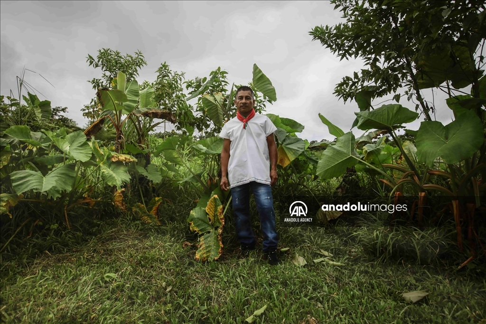
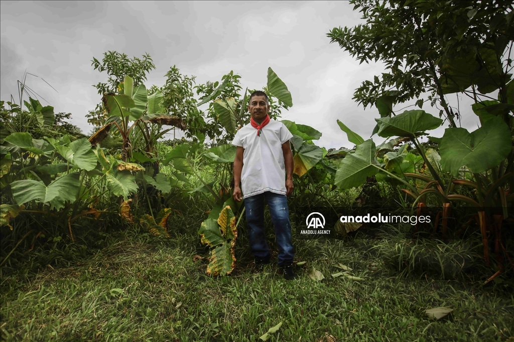

Mapa Interactivo - Galería de Comunidades Indígenas en Colombia
Ficha Técnica de las Comunidades Indígenas en Colombia
- Número Total de Comunidades: Aproximadamente 115 comunidades indígenas reconocidas oficialmente.
- Principales Grupos Étnicos y su distribución geográfica:
- Lenguas Habladas:
- Número de Lenguas: 68 lenguas indígenas.
- Principales Lenguas: Wayuunaiki, Nasa Yuwe, Emberá, Kogi, Quechua (Inga).
- Estado de Vitalidad: Muchas lenguas están en peligro de extinción, aunque algunas como el Wayuunaiki son más vigorosas.
- Estructura Social y Política:
- Familia y Clan: Base de la organización social.
- Caciques: Líderes políticos y espirituales en varias comunidades.
- Consejos Comunitarios: Órganos colectivos de toma de decisiones.
- Mamos/Jaibanás: Líderes espirituales en comunidades como los Kogi y Emberá.
- Asambleas Generales: Espacios de decisión colectiva y consenso.
- Prácticas Culturales y Espirituales:
- Cosmovisión: La naturaleza es sagrada, y se busca mantener el equilibrio entre el mundo espiritual y terrenal.
- Rituales Importantes: Pagamentos (Kogi), Yagé (Amazonía), Balsa Muisca (Muisca).
- Fiestas Tradicionales: Inti Raymi (Inga), Fiesta de la Chicha (Muisca).
- Creencias Espirituales: Dualidad y equilibrio, respeto a los espíritus de la naturaleza y a los ancestros.
- Modos de Subsistencia:
- Agricultura: Cultivos diversificados como maíz, yuca, papa; técnicas sostenibles como la rotación de cultivos.
- Pesca: En ríos y lagos, con manejo sostenible.
- Caza y Recolección: Fuente importante de proteínas y medicina tradicional.
- Artesanías y Comercio: Producción de artesanías tradicionales y comercio en mercados locales y nacionales.
- Principales Desafíos Actuales:
- Desplazamiento y Pérdida de Territorio: Causado por el conflicto armado, proyectos mineros e industriales.
- Autonomía y Gobernanza: Limitada en la práctica, con intervención estatal y falta de recursos.
- Consulta Previa: A menudo inadecuada, sin una verdadera capacidad de veto.
- Preservación Cultural: Erosión cultural y pérdida de lenguas y tradiciones.
- Violencia y Derechos Humanos: Amenazas y asesinatos de líderes indígenas, con alta impunidad.
- Derechos Reconocidos por el Estado:
- Autonomía Territorial: Derecho a gobernarse según sus normas en los resguardos.
- Derechos Culturales: Protección de lenguas y tradiciones, educación bilingüe.
- Consulta Previa: Derecho a ser consultados sobre proyectos que los afecten.
- Participación Política: Representación en el Congreso y gobernanza autónoma a través de cabildos.
- Referencias Bibliográficas:
 ; importancia de los sueños en su cosmología.">
con liderazgo masculino ('Alaüla'); sistema de resolución de conflictos conocido como 'Palabrero o putchipu´u'.">
; importancia de los sueños en su cosmología.">
con liderazgo masculino ('Alaüla'); sistema de resolución de conflictos conocido como 'Palabrero o putchipu´u'.">

 
